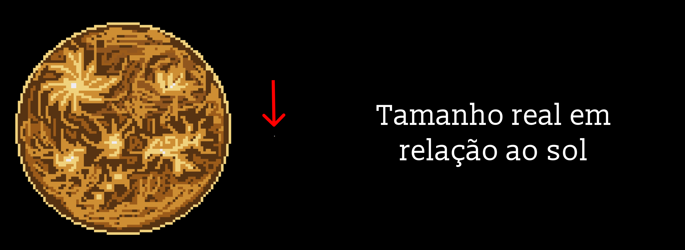

Mercúrio: o pequeno mensageiro do Sol
Mercúrio é o planeta mais próximo do Sol e o mais veloz do Sistema Solar, por isso leva o nome do mensageiro dos deuses romanos. Da Terra, dá para vê-lo a olho nu, baixinho no horizonte, logo depois do pôr do Sol ou pouco antes do amanhecer.
Um dia que dura dois anos
Mercúrio completa uma volta ao redor do Sol em só 88 dias: esse é o ano dele. Mas ele gira em torno de si mesmo tão devagar que, entre um nascer do Sol e o seguinte, passam 176 dias terrestres. Ou seja, lá um único dia dura dois anos.

Calor extremo e frio extremo
Como quase não tem atmosfera para guardar o calor, a temperatura passa de 400 °C durante o dia e cai para cerca de −180 °C à noite.
Lá existe água!
Mesmo tão perto do Sol, Mercúrio tem água congelada. Ela fica no fundo de crateras nos polos, onde a luz nunca chega, e foi confirmada em 2012 pela sonda MESSENGER, da NASA.
Um mistério ainda sem solução
Outro aspecto curioso é sua estrutura: apesar de ser o menor planeta, cerca de 75% de seu interior é formado por um enorme núcleo metálico, com quase 4.000 km de diâmetro. Uma hipótese é que Mercúrio tenha sido maior no passado e tenha perdido parte de sua camada rochosa após colisões com outros corpos celestes. Pequeno, extremo e cheio de mistérios, Mercúrio continua sendo um dos planetas mais intrigantes do Sistema Solar.
Mercúrio e a teoria da relatividade
A órbita de Mercúrio se desloca aos poucos de um jeito que as leis de Newton não conseguiam explicar. Em 1915, a Teoria da Relatividade de Einstein resolveu o mistério: a massa do Sol curva o espaço ao seu redor.
Poucas visitas
Chegar lá é difícil, porque a sonda acelera demais ao cair em direção ao Sol. Só três missões o visitaram: Mariner 10, MESSENGER e BepiColombo, que deve entrar em órbita no fim de 2026 e pode ajudar a desvendar o mistério do núcleo.
Pequeno, rápido, escaldante e gelado ao mesmo tempo, Mercúrio prova que até o planeta mais discreto guarda grandes surpresas.